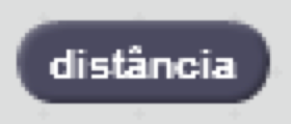
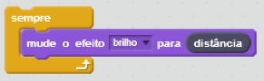
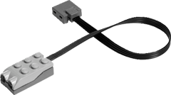

O sensor de distância detecta o brilho ao redor para reportar a distância, então você realmente pode usá-lo para detectar luz e movimento, além da distância.
Para visualizar o valor da distância, clique na caixa de verificação ao lado do bloco na paleta.
Para usar a distância, você precisa de um sensor conectado ao seu computador por meio de um dispositivo LEGO WeDo.
